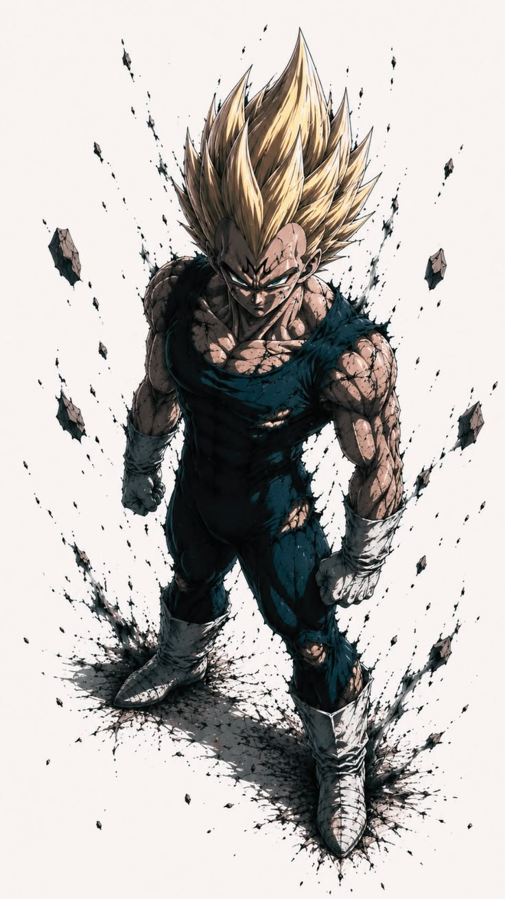
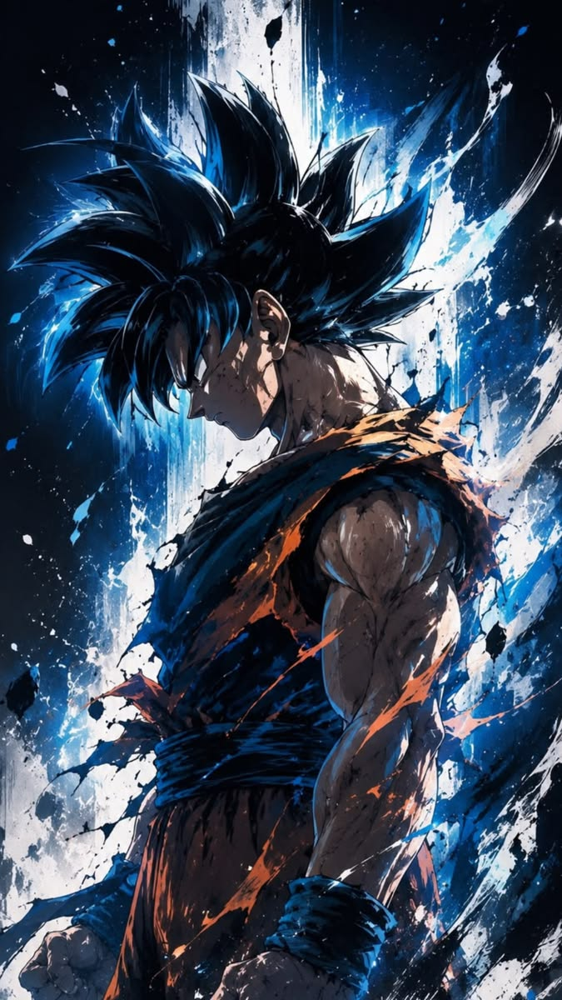
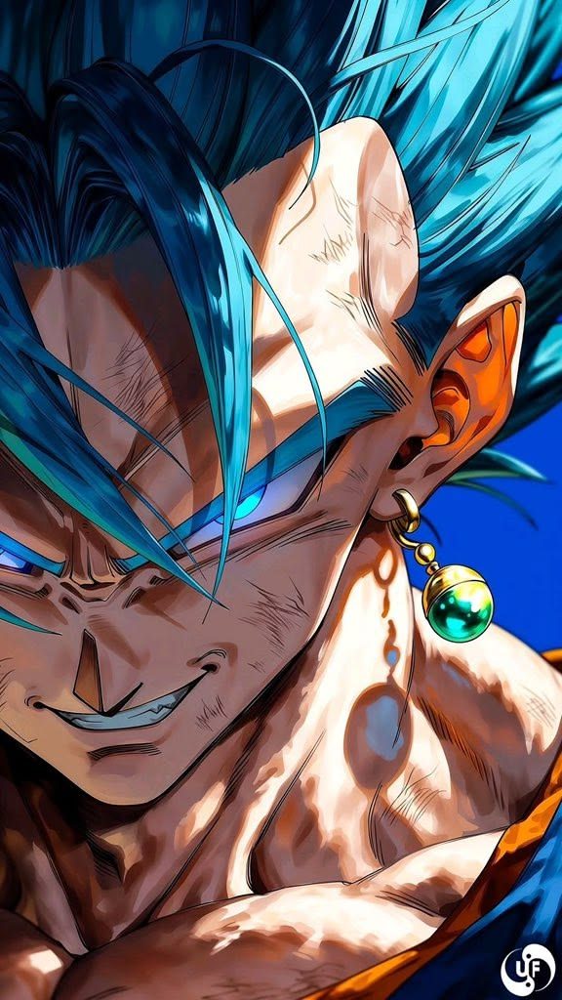

La práctica diaria
Antes de la explosión, está la calma.
Entrenar también es aprender a observar: reconocer los propios límites, recuperar el aliento y elegir intentarlo otra vez.
«La constancia convierte el esfuerzo en camino.»Ver las ocho láminas
Notas de campo
Cuatro gestos del entrenamiento

